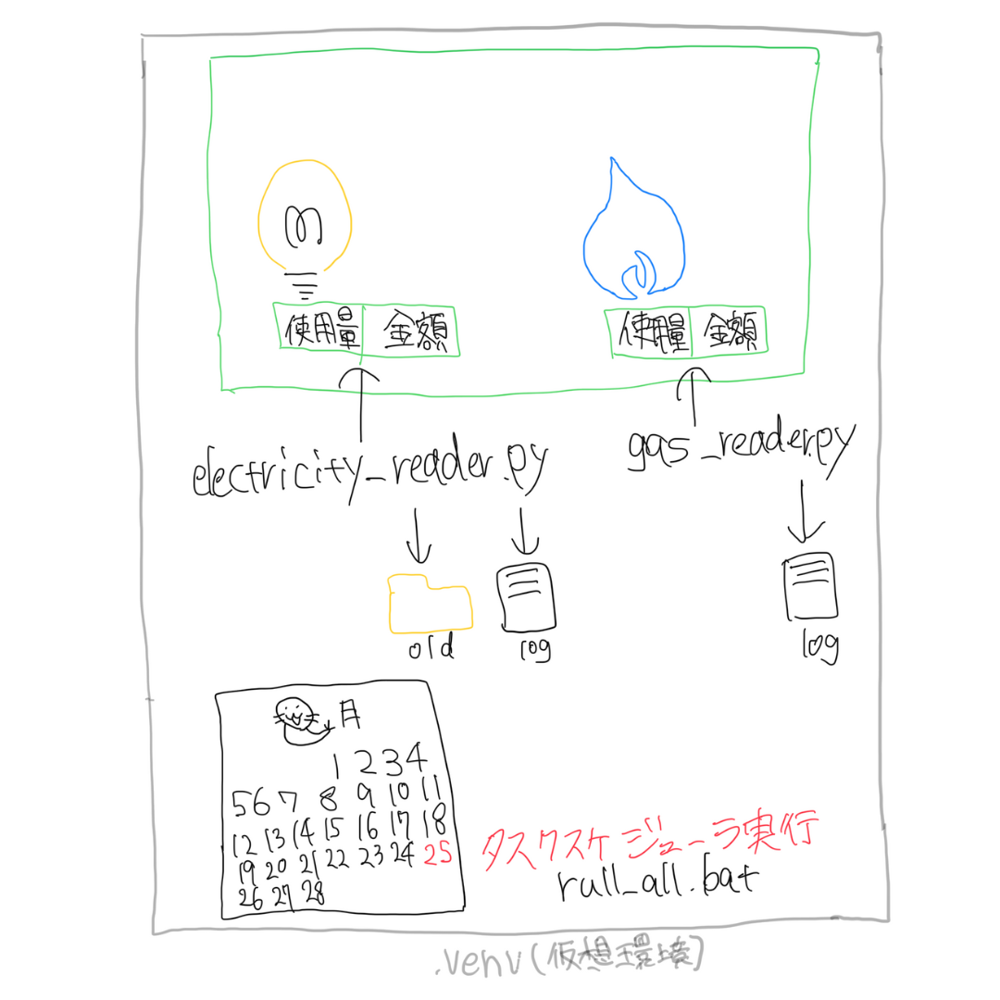

SYSTEM

PythonとVBAの家計管理自動化
目的
「光熱費だけを可視化したい」という思いから、
Web明細の自動取得と月次記録のExcel化の実現
システムに反映済
・電気：PDF明細を自動解析、使用量と金額をExcelへ記録
・ガス：Webログイン＆スクレイピングにより、使用量と金額を取得
・仮想環境（venv）を使用したパッケージ管理と実行環境の分離
・Excelの自動記録：使用月に応じて対象行へ書き込み
・run_all.bat により、複数スクリプトを一括実行
・ログファイル出力によるエラー・実行履歴の記録
これからやりたいこと
・Webサイトの仕様変更に対応
・IDとパスワードは.envファイルで安全に管理
・タスクスケジューラへの登録による完全自動化